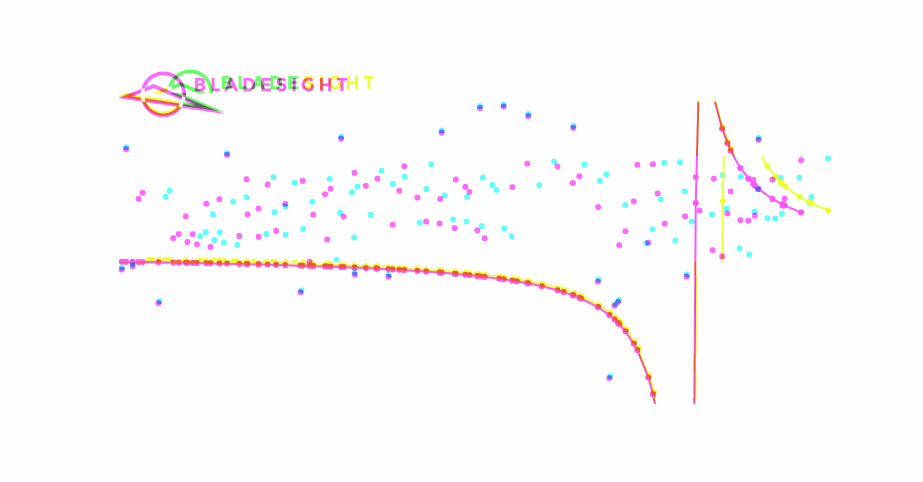

You are here
Single Degree of Freedom (SDoF) Fit Method
In the previous chapter, we used a fully defined SDoF vibration model to generate the samples we typically observe in BTT data.
In this chapter, we do the opposite.
The SDoF fit method comprises solving the inverse problem. In other words, we already have the sampled tip deflections for each probe. Now we need to find the SDoF model's parameters. I've put together a GIF that captures the essence of the task. Our model (represented by the red line) changes until it lies on top of the observed datapoints (blue).

We restate the SDoF equations below for convenience.
Symbols
| Symbol | Meaning | SI Unit | Domain |
|---|---|---|---|
| \(x(t)\) | Tip deflection | \(\mu m\) | \(\mathbb{R}\) |
| \(X(\omega)\) | Vibration amplitude | \(\mu m\) | \(\mathbb{R}+\) |
| \(\delta_{\text{st}}\) | Static deflection | \(\mu m\) | \(\mathbb{R}+\) |
| \(\zeta\) | Damping ratio | - | \([0,1)\) for underdamped systems |
| \(\omega_n\) | Natural frequency | \(rad/s\) or Hz | \(\mathbb{R}+\) |
| \(\theta_s\) | Sensor position | \(rad\) | \([0, 2\pi]\) |
| \(\phi(\omega)\) | Phase angle | \(rad\) | \(\mathbb{R}\) |
| \(\omega\) | Excitation frequency | \(rad/s\) or Hz | \(\mathbb{R}+\) |
| \(EO\) | Engine Order | - | \(\mathbb{Z}+\) |
Our task is to find values for \(\delta_{\text{st}}\), \(\zeta\), and \(\omega_n\) that best fit the data. This approach was set forth as early as 1978. It is, to my best knowledge, the first BTT vibration inference method ever proposed (Zablotskiy and Korostelev, 1978)1.
In this chapter, we first produce a simple solution to the above equations. Layers of complexity are added incrementally. I use the incremental approach to emphasize the nonlinear nature of this problem. If you invest time in understanding these concepts, you can apply the lessons wherever you need to determine parameters inside sinusoidal terms in the future.
This chapter culminates in the fulfillment of the promise I made at the start of the tutorial. You'll be able to infer blade frequency, amplitude, and phase from raw time stamps.
Outcomes
Understand why we require an optimization function to determine the model parameters of the SDoF fit method.
Understand why we need to specify upper and lower bounds for the model parameters.
Understand why the SDoF model, in its raw form, is not adequate. We need to add phase and amplitude offsets to the objective function.
Understand how we can loop over each probe's data to fit the SDoF model to multiple probes.
Understand why the EO is treated differently than the other model parameters. Because the EO can only be a positive integer, we iterate over the EOs to identify the optimal EO.
Follow along
The worksheet for this chapter can be downloaded here .
You can open a Google Colab session of the worksheet here:  .
.
You need to use one of these Python versions to run the worksheet:


Getting the dataset
Let's use the dataset from Chapter 5 again. The functions developed in chapters 1 - 6 have been included in the bladesight package.
We use these functions to generate the tip deflections for the dataset:
- These are the angles between probes 2 to 4 relative to probe 1.
- The order of the zeroing polynomial.
- The order of the Butterworth filter.
- The cutoff frequency of the Butterworth filter.
We plot the peak-to-peak vibration for blade 1 in Figure 2 below.
The peak-to-peak vibration for blade 1 is presented in Figure 2 above. There seems to be symmetric resonance events on the up and downward ramps.
For illustrative purposes, we focus on the resonance event between shaft revolutions 500 and 600.
End effects
You may have noticed the ends of the peak-to-peak vibration increase without a subsequent decrease. Resonance events are usually identified by the peak-to-peak vibration increasing as the event starts, and decreasing as the event finishes.
The end effects observed in Figure 2 is not a resonance event. It is an artifact of the order domain polynomial detrending we performed in Chapter 6. The order domain zeroing often skews the peak-to-peak vibration values near the edges.
If there were resonances in those regions, we would have taken the time to perform better zeroing. From prior experience, I can confirm there are no resonances in those regions, so we can simply proceed.
The original method (Zablotskiy and Korostelev, 1978)1 used only one probe's data to fit the model. We'll also start with just one probe.
The nontrivial nature of the problem
It is conventional for engineers to invert the equation that contains the variable we want to solve. Let's start with solving for the EO. We invert Equation 1 below:
the below domain constraint is required:
How easy is it to solve for \(EO\) using this inversion? I have no idea  . It seems absurdly difficult to me.
. It seems absurdly difficult to me.
Firstly, the model parameters, \(\delta_{\text{st}}\), \(\zeta\), and \(\omega_n\), are all inside the \(X(\omega)\) and \(\phi(\omega)\) terms. They are also unknown! We could rearrange the equations to solve for these parameters, but we would have the same problem. Our model parameters cannot be solved for directly.
Secondly, we have a domain constraint on the argument of the arccos function. This means we have to solve for \(EO\) using a nonlinear constraint. I don't like the sound of that. If you do manage to find a closed form analytic solution for the model parameters, don't send it to me, send it to the Nobel committee.
We therefore resort to computational techniques. We'll use an optimization algorithm to find the solution.
The first step we take toward a solution is to guess the EO of vibration. The decision to arbitrarily guess the EO may make you uneasy. In most undergraduate courses, we are used to well-posed problems. Give me the mass of a body and the force acting on it, and I can tell you the acceleration with 100% certainty. Solving the SDoF fit method is not like that.
Solving the SDoF fit problem is a bit like dating. The only way to find the right person is to first commit to the relationship, and assess how it goes.
How can we make an intelligent guess for the EO? We can use the formula below:
We've seen this equation before. It is the definition of the Engine Order. The EO is the integer multiple of the shaft speed that determines the excitation frequency.
For the blades used in this tutorial, I happen to know (because I designed these blades) that the blades' first natural frequency is approximately 125 Hz. To get a shaft speed, we take the median shaft speed inside the resonance region that we've identified between revolutions 500 and 600, which is 950 RPM:
We'll therefore start with a guess of 8 for our EO. Is it a good guess? That will be revealed at the end of this chapter.
What if the natural frequencies are not known?
Don't worry. We just need to pick an EO to start with for our optimization algorithm. Later in the chapter, we loop over a range of EOs and compare the objective function values to identify the optimal EO.
Why are we assuming there is only one frequency that dominates the response?
This entire chapter is based on the assumption that there is one frequency that dominates the response. That is the definition of the SDoF model. It is a simplification that is often good enough. Here's an appropriate quote often attributed to George Box: "All models are wrong, but some are useful" (Box, 1979)2.
In reality, the blade will respond at many different frequencies simultaneously. However, if the blades are in resonance, the response will likely be dominated by the natural frequency.
Resonance window selection
To fit our SDoF model, we need to identify data in a resonance region. In other words , we must create a new DataFrame that contains only the tip deflections within a resonance region.
We can use the shaft revolution number to construct this new DataFrame . The eval method of a Pandas DataFrame can be used to this end:
tip_deflection_dfs[0]), and then we select only the tip deflections occurring between shaft revolutions 500 and 600 (query("n > 500 and n < 600")).
Can't window selection be automated?
Yes. Techniques exist to automatically identify resonance regions. Some of them have been patented. They are not included here because they are not required for solving the SDoF fit equations.
A simple objective function
Many optimization algorithms are available in Python. These algorithms require an objective function. The objective function evaluates how good a proposed set of model parameters are by returning an error between the predicted tip deflections and the observed tip deflections. It should return a small error for a good fit and a large error for a bad fit. The optimization algorithm searches for parameters that minimize the objective function.
Let's start with a simple objective function. We'll use the sum of squared error between the measured tip deflections, and the predicted tip deflections defined in Equation 1 to Equation 4.
The code for this objective function is shown below:
-
This function returns the vibration amplitude of the blade vibration.
x(ω) = δ_st / sqrt( (1 - r**2)**2 + (2*ζ*r)**2)where:
r = ω/ω_0
Args:
omega (np.ndarray): The excitation frequencies in rad/s. omega_n (float): The natural frequency of the blade in rad/s. zeta (float): The damping ratio of the blade vibration. delta_st (float, optional): The static deflection of the blade. This value is usually given in units of µm.Returns:
np.ndarray: The amplitude of the blade vibration in the same units as delta_st. -
Get the phase between the tip deflection and the forcing function.
φ(ω) = arctan(2ζr / (1 - r**2))
where: r = ω/ω_n
Args: omega (np.ndarray): The excitation frequencies in rad/s.
omega_0 (float): The natural frequency of the blade in rad/s. delta (float): The damping ratio of the blade vibration.Returns:
np.ndarray: The phase of the blade vibration in rad. -
This function determined the predicted SDoF fit samples at a proximity probe given the SDoF parameters.
Args:
omega_n (float): The natural frequency of the SDoF system. zeta (float): The damping ratio of the SDoF system. delta_st (float): The static deflection of the SDoF system. EO (int): The EO of vibration you want to fit. theta_sensor (float): The sensor's angular position on the rotor. arr_omega (np.ndarray): The angular velocity of the rotor corresponding to each revolution for which we want to predict the SDoF samples.Returns:
np.ndarray: The predicted SDoF samples. -
Note how we multiply the shaft speed with EO to get the excitation frequency.
-
This function returns the error between the SDoF model given the parameters and the measured tip deflection data.
Args:
model_params (np.ndarray): The SDoF fit method's model parameters. It includes a list of the following parameters: omega_n (float): The natural frequency of the SDoF system. ln_zeta (float): The damping ratio of the SDoF system. delta_st (float): The static deflection of the SDoF system. arr_tip_deflections (np.ndarray): The tip deflection data of the probe. arr_omega (np.ndarray): The angular velocity of the rotor corresponding to the tip deflection data. EO (int): The EO of vibration you want to fit. theta_sensor (float): The sensor's angular position on the rotor.Returns:
np.ndarray: The sum of squared error between the tip deflection data and the predicted tip deflections. -
We use the logarithm of the damping ratio to make the optimization surface more linear. This helps the optimization algorithm converge faster.
We've broken up our loss function to make it easier to understand. It is dependant on three other functions:
get_Xget_phipredict_sdof_samples_simple
The get_X and get_phi functions are used to calculate the vibration amplitude and phase. The predict_sdof_samples_simple function uses these values to predict the tip deflections for a given set of SDoF parameters. The suffix _simple has been added to the function names. It will later become clear why I did this.
Optimization bounds
Which optimization function should we use?
One of the challenges of solving optimization problems where the optimization parameters occur inside sinusoidal terms is they often struggle to converge. This is because the solution space may have many local minima and maxima, and the gradient may not point in the direction of the global optimum.
Our problem contains both cosine and arctan functions, which means the solution space is likely complex and nonlinear. We therefore choose to use a global optimization method because it does not rely on gradients, but rather explores the solution space with a population of candidate solutions.
I experimented with several methods, and found the scipy.optimize.differential_evolution method works well for this problem. I did not have a more profound reason than this.
This method requires us to specify bounds for the optimization parameters. We can specify bounds based on our physical constraints and prior knowledge.
Bounds for the natural frequency
To set the bounds for the natural frequency, we can use a simple formula based on the engine order and the shaft speed. We have already identified the resonance window. We therefore have all shaft speed values occurring inside the resonance window.
We can therefore calculate the minimum and maximum possible natural frequency as follows:
The snippet below shows how to implement this in code:
Bounds for damping
Our system is underdamped, which means the damping ratio, \(\zeta\), is positive and less than 1 (Rao, 2003)3. From experience, a range between 0.0001 and 0.3 should cover all cases encountered in practice.
In the previous chapter, you had an opportunity to change the \(\zeta\) parameter with a slider and observe the effect this has on the vibration response. You may recall that, when \(\zeta\) is small, a tiny change in \(\zeta\) causes a huge change in the vibration amplitude. The optimization algorithm is not privy to this information. The more linear the optimization surface, the easier it is for the optimization algorithm to find the global minimum.
We therefore transform the damping ratio by calculating its natural logarithm. This way, the optimization algorithm can work with a more straightforward relationship between the parameter it is optimizing, \(\ln(\zeta)\), and the objective function.
We convert the logarithm of \(\zeta\) back to the original value inside the objective function, as indicated in Line 45 of the code snippet above.
The bounds for the damping ratio is therefore:
- I expected the natural logarithm function to be
np.ln. For some reason, it is actuallynp.log.
Bounds for the static deflection
The static deflection bounds are the most application specific. It depends on how large your resonance amplitudes generally are. The higher the vibration amplitude, the wider these bounds should be.
A good initial guess for the current rotor is a value between 0 and 10 \(\mu m\) for \(\delta_{\textrm{st}}\). You can adjust this value later based on your results.
Solving the simple problem
Now we simply provide these values, along with the optimization function, to the scipy.optimize.differential_evolution function. The code snippet below shows how to do this:
- We import the
differential_evolutionfunction from thescipy.optimizepackage. In the worksheet, we do this at the top of the worksheet, not where we solve the problem. - We provide the bounds for the optimization parameters. The optimization algorithm calculates there are 3 parameters, and therefore creates an array of three values being passed into the
model_paramsargument of theSDoF_simple_lossfunction. - Each one of these arguments correspond to the positional arguments in the
SDoF_simple_lossfunction after themodel_paramsargument. Thedifferential_evolutionfunction will pass these arguments to theSDoF_simple_lossfunction in the same order. - We use the median value of the AoA as the sensor position. Remember, the
AoA_p1column has not been zeroed or normalized yet. - The seed is not strictly necessary, but it ensures the results are reproducible on the same computer. You may even get the exact same answers as I did if you use the same seed.
The differential_evolution function returns a OptimizeResult object. We can print this object:
message: Optimization terminated successfully.
success: True
fun: 1881551.798646529
x: [ 7.887e+02 -6.175e+00 1.469e+00]
nit: 15
nfev: 760
jac: [-9.313e-02 3.423e+00 -4.005e+00]
Here, the optimization algorithm converged successfully. We can print out the results of the optimization algorithm as follows:
We have solved the SDoF fit method with a global optimization algorithm 👏.
Can we confirm this solution is correct?
It is always a good idea to plot the results. The predicted vs true tip deflections are presented in Figure 3 below.
Figure 3 reveals our model is not a good fit for the measured tip deflections. The two lines share some resemblance, but our fit is far from satisfactory.
One thing our model does capture is the increase in amplitude around \(n=560\). This suggests we are on the right track, but we need to refine our model further.
There are two shortcomings we need to fix. First, our model predicts zero tip deflection near the start and end of the resonance. Contrast this to the measured tip deflections, which seems to settle at -80 and -110 μm respectively.
The most likely reason for this is because our data zeroing step pushed the "measured" tip deflections past its true zero point. The seemingly negative values may be an artifact of the zeroing process. We need to account for this in our model.
Second, our model only produces positive tip deflections. The measured data, however, shows a sudden negative dip around \(n=568\). This means our model misses an important phenomenon.
Why is our model flat when it should predict tip deflections along this sudden dip?
Because we have made a terribly simplistic assumption concerning our phase angle. Equation 3 is the phase angle between the forcing function and the response. This implicitly assumes the forcing function is zero at the start of each revolution. In practice, the phase angle of the forcing function is almost certainly unknown. We therefore need to solve the forcing function offset as well.
Amplitude and phase offsets
We have diagnosed what's wrong with our model: it does not account for amplitude and phase offsets. How do we fix it? Let's start with the phase offset. This is a simple adjustment: we just add a constant term to the argument of the cosine function from Equation 1.
The new equation is given below:
where \(\phi_0\) is our new phase offset. What are the possible values for \(\phi_0\)? Since the start of the forcing function is unknown, we can assume any value between 0 and \(2 \pi\). That's our first improvement.
Next, we need to add an amplitude offset. This is more complicated. A reasonable attempt would be to just add a constant term to each probe's measurements. That would, however, imply our zeroing artifact at the start and the end of the resonance has the same value. No justification for this assumption exists.
Instead, we introduce a linearly-varying amplitude correction. The correction function is defined by two terms, \(z_{\Omega_{\textrm{median}}}\) and \(z_{\Omega_{\textrm{max}}}\). These terms are defined as follows:
- \(z_{\Omega_{\textrm{median}}}\) is the amplitude correction at the median shaft speed in the resonance window.
- \(z_{\Omega_{\textrm{max}}}\) is the amplitude correction at the maximum shaft speed in the resonance window.
From these two terms, we can calculate a correction function that varies linearly with shaft speed.
The correction function is defined as follows:
The terms \(m_z\) and \(b_z\) are the slope and intercept of the correction function. They depend on the correction factors, \(z_{\Omega_{\textrm{median}}}\) and \(z_{\Omega_{\textrm{max}}}\), and the median and maximum shaft speeds in the resonance window, \(\Omega_{\textrm{median}}\) and \(\Omega_{\textrm{max}}\).
Correction function vs phase offset
We've added two new concepts: the phase offset term, \(\phi_0\), and the correction factors, \(z_{\Omega_{\textrm{median}}}\) and \(z_{\Omega_{\textrm{max}}}\). There is a subtle difference between where these two terms are applied.
The phase offset term, \(\phi_0\), is part of our SDoF vibration model. It shifts the entire vibration waveform such that \(\phi\) represents the phase difference between the force and the tip deflection. The correction function, \(z(\Omega)\), is not part of the SDoF vibration model. This correction factor is applied to the measured tip deflections.
How do we choose the bounds for the correction factors? Hopefully, our optimization algorithm is smart enough to find the optimal solution without us constraining the correction factors too much. We therefore set the positive and negative bounds' size equal to the maximum absolute tip deflection in the resonance window.
The bounds for our new parameters are therefore:
We rewrite our SDoF model as follows:
-
This function determined the predicted SDoF fit samples at a proximity probe given the SDoF parameters.
Args:
omega_n (float): The natural frequency of the SDoF system. zeta (float): The damping ratio of the SDoF system. delta_st (float): The static deflection of the SDoF system. phi_0 (float): The phase offset of the SDoF system. EO (int): The EO of vibration you want to fit. theta_sensor (float): The sensor's angular position on the rotor. phi_0 (float): The phase offset of the SDoF system. arr_omega (np.ndarray): The angular velocity of the rotor corresponding to each revolution for which we want to predict the SDoF samples.Returns:
np.ndarray: The predicted SDoF samples.
Our new loss function is given below:
-
This function calculates the correction values for each sample based on the correction factors.
Args: arr_omegas (float): The omega values for each sample.
z_median (float): The correction value at the median shaft speed. z_max (float): The correction value at the max shaft speed.Returns: np.ndarray: The sample offsets for each sample.
-
This function fits the SDoF parameters to a single probe's tip deflection data.
Args: model_params (np.ndarray): The SDoF fit method's model parameters. It includes a list of the following parameters: omega_n (float): The natural frequency of the SDoF system. ln_zeta (float): The damping ratio of the SDoF system. delta_st (float): The static deflection of the SDoF system. phi_0 (float): The phase offset of the SDoF system. z_median (float): The amplitude offset at the median shaft speed. z_max (float): The maximum amplitude offset.
arr_tip_deflections (np.ndarray): The tip deflection data of the probe. arr_omega (np.ndarray): The angular velocity of the rotor corresponding to the tip deflection data. EO (int): The EO of vibration you want to fit. theta_sensor (float): The sensor's angular position on the rotor.Returns: np.ndarray: The sum of squared error between the tip deflection data
We've created a new function, get_correction_values. This function calculates the correction values for each sample based on the correction factors. The correction factors are the values that need to be determined during optimization.
Solving the improved problem
We solve the improved problem with the code below:
Once again, we can print the results:
ω_n = 126.27747716213543 Hz
ζ = 0.0026626951829294677
δ_st = 3.6772997184546794 µm
φ_0 = 4.683877456932529 rad
z_median = 55.39278985745745 µm
z_max = 134.43742560770318 µm
The values are in the same region as the previous solution, except for the static deflection and newly added terms, which were zero by implication in the previous solution.
The predicted vs true tip deflections are presented in Figure 4 below.
That's much better 👏. The model now captures the negative dip around \(n=568\). The model also captures the tip deflection at the start and end of the resonance. The only critique is that the model seems to have a lower amplitude than the measured tip deflections where the resonance occurs.
We could delve into a solution. Unfortunately, it makes for a beautiful coding exercise later on 😁.
Multiple probe solution
We have seen how to apply the SDoF fit method to a single probe's tip deflections. Now we want to extend this method to multiple probes. How do we do that?
The idea is similar to the single probe case. In the single probe case, we had one array of observed tip deflections. Now, we have a set of observed tip deflection arrays, where each array in the set corresponds to a different probe. We also have different \(\theta_s\) values for each probe, depending on the circumferential spacing between the probes.
We have the same number of model parameters, because the model parameters are independent of the number of probes. We must, however, introduce a set of correction values for each probe. Because of this, our optimization search space scales linearly with the number of probes.
Our new loss function is given in the code below.
-
This function fits the SDoF parameters to multiple probes' data.
Args: model_params (np.ndarray): The SDoF fit method's model parameters. It includes a list of the following parameters:
omega_n (float): The natural frequency of the SDoF system. ln_zeta (float): The damping ratio of the SDoF system. delta_st (float): The static deflection of the SDoF system. phi_0 (float): The phase offset of the SDoF system. And the z_median and z_max for each probe. z_median (float): The amplitude offset at the median shaft speed. z_max (float): The maximum amplitude offset. tip_deflections_set (List[np.ndarray]): The tip deflection data for each probe. arr_omega (np.ndarray): The angular velocity of the rotor corresponding to the tip deflection data. EO (int): The EO of vibration you want to fit. theta_sensor_set (List[float]): Each sensor's angular position relative to the start of the revolution.Returns:
np.ndarray: The sum of squared error between the tip deflection data of each probe and the predicted tip deflections. -
This code unpacks the optimization algorithm model arguments,
model_params, into the SDoF parameters and the correction factors. The last variable,correction_factors, has an asterisk,*, in front of it. This is Python's way of allocating the rest ofmodel_paramsintocorrection_factors. With this notation, we can use the same loss function, regardless of how many probes we have. errorare now initialized and will be incremented for each probe.- We loop over every probe. Essentially, we do exactly what we did in the previous loss function for each probe.
-
We grab the correction factors pertaining to this probe. The correction factors are located in
correction_factorsin the following order:
The code below shows how to use the new loss function to solve the multiple probe problem:
- We loop over each probe and add the bounds, tip deflection array and the probe static position to the optimization problem.
There's a bit more effort involved with the setup of our bounds and arguments, but it is conceptually the same as the single probe case.
The results are shown below:
ω_n = 126.25099097038297 Hz
ζ = 0.0026064673895625176
δ_st = 3.687735366342961 µm
φ_0 = 4.833934260209016 rad
z_median_1 = 64.63941828855289 µm
z_max_1 = 132.82804180903605 µm
z_median_2 = 96.0353967585784 µm
z_max_2 = 37.229680208617246 µm
z_median_3 = 33.09137450249458 µm
z_max_3 = 93.7017772103181 µm
z_median_4 = 163.029855309319 µm
z_max_4 = 160.06562042963864 µm
Again, our model parameters are in the same region as the previous solution. The predicted vs true tip deflections are shown in Figure 5 below. Each probe's fit is drawn on a different tab.
We are happy with the fit for each probe. Our model parameters did not change much from the single probe case. This is exactly what we want to see. A model should be able to fit multiple probes with the same parameters.
Estimating the EO
Until this point, we have assumed the EO=8. The optimization algorithm will, however, converge to a solution regardless of our choice for EO. Which EO is the correct one?
We can simply repeat the above exercise for multiple EOs and compare the objective function errors. The EO that results in the lowest error value is most likely the correct one.
The code below shows us how to do this:
This loop takes approximately 1 minute and 30 seconds to run on my laptop. The optimal solution error function value for each EO can be accessed in the .fun attribute of each solution.
From Figure 6 above, our initial guess was correct 💪! The optimal solution errors for each EO decreases gradually as we approach EO=8. EO=8 exhibits the smallest value. It is therefore reasonable to assume the true EO of vibration is 8.
Conclusion
We've come a long way in this chapter. We've learned how to fit the SDoF fit parameters to BTT probe data with a global optimization function. We've also learned how to combine the data from multiple probes to get a more robust estimate of the model parameters.
But what's even more remarkable is how well our simple model works. With just four parameters, we can capture the vibration of the blade tip over multiple revolutions with high accuracy.
In the next and final chapter, we'll explore another way to infer the vibration parameters. This method, however, can be solved using linear algebra. It makes the solution faster and therefore more suitable for real-time analysis.
Outcomes
Understand why we require an optimization function to determine the model parameters of the SDoF fit method.
Understand why we need to specify upper and lower bounds for the model parameters.
Understand why the SDoF model, in its raw form, is not adequate. We need to add phase and amplitude offsets to the objective function.
Understand how we can loop over each probe's data to fit the SDoF model to multiple probes.
Understand why the EO is treated differently than the other model parameters. Because the EO can only be a positive integer, we iterate over the EOs to identify the optimal EO.
Acknowledgements
Thanks to Justin Smith and Alex Brocco for reviewing this chapter and providing feedback.

Dawie Diamond
2024-03-19
Coding exercises
1. Getting the amplitude larger
We've seen throughout this chapter that our model's amplitude is not quite right. It's too low.
Why do you think the amplitude is constantly too low?
Can you write a new objective function that produces a larger \(\delta_{st}\)?
Reveal answer (Please try it yourself before revealing the solution)
- This is a new parameter.
- We use the new parameter to scale the error values according to the absolute size of the measured tip deflections. This rewards solutions that better capture the full amplitude of the tip deflections.
Usage example:
- We set the
amplitude_scaling_factorto 2. This means the error will be scaled by the square of the absolute value of the measured tip deflections. This rewards solutions that better capture the full amplitude of the tip deflections.
2. Writing a function we can use
We've covered a lot of ground in this chapter. Let's write a main entrypoint that performs the SDoF fit given a minimum number of arguments.
Write a function, called, perform_SDoF_fit, receiving the following three required arguments:
- The blade tip deflection DataFrame,
df_blade. - The revolution number indicating the start of the resonance,
n_start. - The revolution number indicating the end of the resonance,
n_end.
The function should return the following values:
- The optimal solution, i.e. \(\omega_n\), \(\zeta\), \(\delta_{st}\), and \(\phi_0\)
- The EO of vibration.
You may optionally accept other parameters to make the function more flexible.
Reveal answer (Please try it yourself before revealing the solution)
Usage example:
3. Comparing resonances on the upward and downward ramps
Throughout this chapter, we've focused on the EO=8 resonance on the ramp-up. We also have an EO=8 resonance on the ramp-down. Since nothing changed in the setup between the two resonances, we would expect the model parameters to be the same for both resonances.
Analyze the resonance on the downward ramp and compare the model parameters to the upward ramp.
Do the results make sense?
Reveal answer (Please try it yourself before revealing the solution)
This is something you can do yourself. You're welcome to email me your results if you want me to check it.
-
Zablotskiy, I.Y., Korostelev, Y.A., 1978. Measurement of resonance vibrations of turbine blades with the ELURA device. Foreign Technology Div Wright-Patterson AFB OH. ↩↩
-
Box, G.E., 1979. Robustness in the strategy of scientific model building, in: Robustness in Statistics. Elsevier, pp. 201--236. ↩
-
Rao, S., 2003. Machanical vibrations. Pearson Education India. ↩